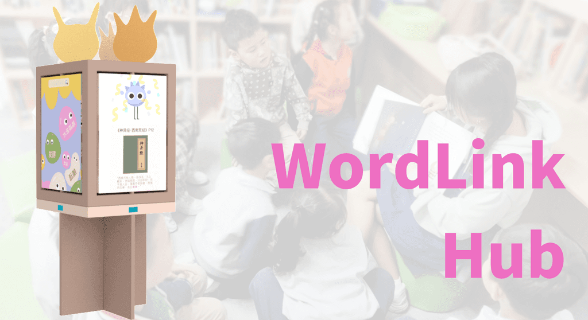

WordLink Hub: Empowering Floating Children Through Interactive Reading and Learning

Overview
WordLink Hub is an educational system designed for "floating children" — children of rural migrant workers in urban China who face barriers to stable schooling and quality education. The system was developed in collaboration with Weilan Library, a non-governmental organization in Kunshan.
System Components
- WordBuddy — A wearable device with text scanning, display, and pronunciation functions for vocabulary building. Customizable as bracelet, handheld tool, or magnifying glass. Features a collectible monster character that evolves based on words learned; two devices can compete socially.
- StorySpot Corner — An interactive library installation using two screens to visualize learning progress, encourage word exploration, and sustain reading motivation.
Design Process
The design followed the POEMS Framework analysis with 4 rounds of design iteration and semi-structured user research with children and librarians at Weilan Library.